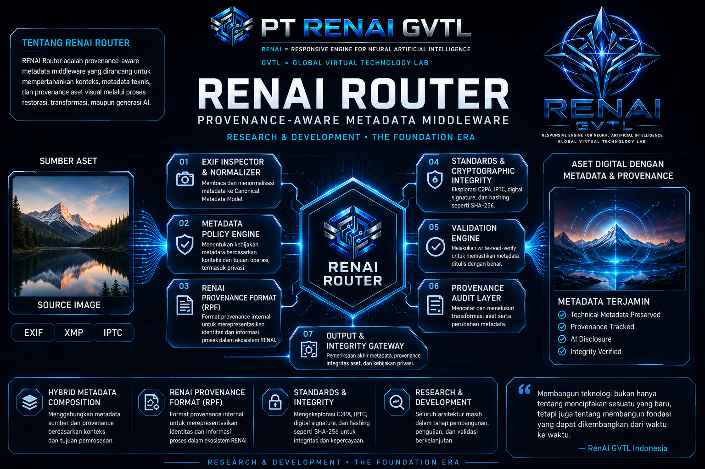

AI
AI Experiments
Eksperimen model AI, routing intelligence, inference, dan sistem neural.
AI Research →
 PT RENAI GVTL INDONESIA
•
EXPERIMENT CENTER
•
RESEARCH LAB
•
R&D
PT RENAI GVTL INDONESIA
•
EXPERIMENT CENTER
•
RESEARCH LAB
•
R&D
Pusat dokumentasi eksperimen, prototype, pengujian, riset, dan eksplorasi teknologi dalam ekosistem RENAI GVTL.
Tidak semua eksperimen menghasilkan produk. Sebagian eksperimen dibuat untuk menguji konsep, menemukan pendekatan baru, atau memahami kemungkinan teknologi.
Experiment Center digunakan untuk mencatat proses eksplorasi teknologi RENAI GVTL, mulai dari hipotesis, prototype, pengujian, hingga hasil eksperimen.
Eksperimen model AI, routing intelligence, inference, dan sistem neural.
AI Research →Eksperimen EXIF, metadata provenance, authenticity, dan composition.
Metadata Research →Eksperimen image generation, enhancement, restoration, dan visual intelligence.
Visual Research →Eksperimen routing, middleware, architecture, dan sistem AI infrastructure.
Infrastructure →Arsip eksperimen yang sedang dikembangkan, diuji, atau dipelajari dalam ekosistem RENAI.

Eksperimen arsitektur metadata, EXIF provenance, policy engine, dan metadata composition.
Open Experiment →
Eksplorasi routing dan integrasi model AI dalam arsitektur Chat GVTL.
Open Experiment →
Eksplorasi awal generative AI untuk image generation dalam ekosistem RENAI.
Open Experiment →Eksperimen komposisi metadata untuk mempertahankan provenance antara data fisik dan digital.
Open Experiment →Konsep masih dalam tahap penelitian dan eksplorasi.
Research →Konsep telah mulai diterapkan menjadi prototype.
Prototype →Sistem atau konsep sedang melalui proses pengujian.
Testing →Eksperimen telah menghasilkan temuan atau hasil tertentu.
Results →Ketiganya memiliki fungsi berbeda dalam dokumentasi ekosistem RENAI GVTL.
Experiment Center merupakan ruang dokumentasi untuk mencatat proses eksplorasi teknologi RENAI GVTL secara bertahap.
Setiap eksperimen dapat menghasilkan prototype, insight, metode baru, atau bahkan keputusan untuk menghentikan suatu pendekatan. Semuanya tetap menjadi bagian dari proses R&D.